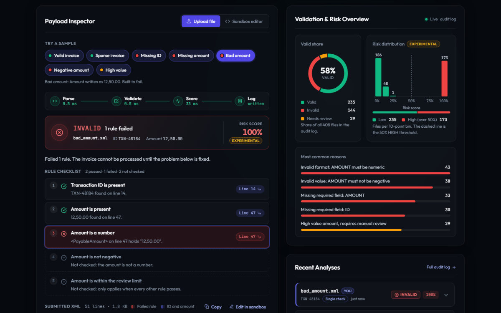
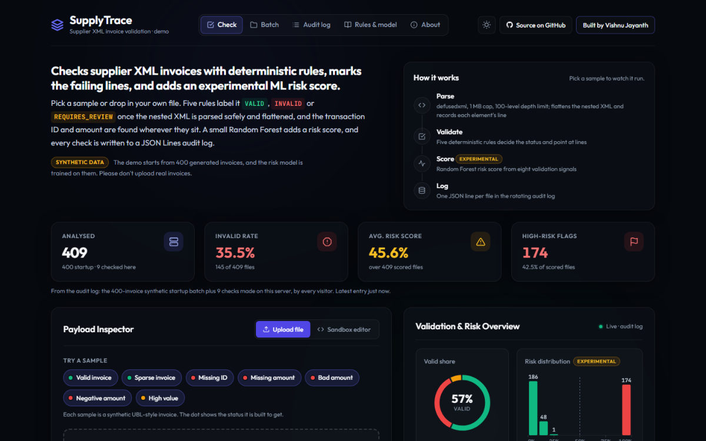

All workCase study 03 / 03
SupplyTrace
A modular pipeline that ingests raw XML invoices, validates them with deterministic rules and compiles standardized feature matrices, with an experimental ML risk score.
- Year
- 2026
- Built with
- FastAPI · scikit-learn · Pandas

(01)The problem
Why it existsA bad invoice usually causes trouble later, in a system downstream.
By then it is hard to trace back to the file. SupplyTrace checks each file when it arrives: it labels every invoice valid, invalid or needs review with deterministic rules, points each rule at the line of the file behind it, and logs the result.
An experimental Random Forest adds a risk score trained on 400 synthetic invoices, with an explanation of what drove each prediction.
(02)How it works
From the READMEDashed bracket: the server times each stage and returns it with the rule lines and risk drivers.
Parse safely. The upload is parsed in memory with
defusedxml(no DTDs), files nested more than 100 levels deep are rejected, and uploads over 1 MB get a413. The XML is flattened into dot-notation keys, and a secondexpatpass records each element's line.Validate with rules. Five deterministic rules decide the status:
VALID,INVALIDorREQUIRES_REVIEW. Every rule comes back as a checklist row with the line that shows it.Score the risk (experimental). Eight validation signals go to a Random Forest trained on the synthetic batch; the score comes with the base rate plus one contribution per feature.
Log it. One JSON line per file goes to a rotating audit log, which also feeds the dashboard.
(03)Key decisions
5 choices-
Rules set the status; the model adds a risk score
The status always comes from five deterministic rules. The risk score is labelled experimental: it is trained on synthetic data and says nothing about real suppliers.
-
Safe parsing of untrusted uploads
defusedxmlrefuses DTDs, so there is no entity expansion or external entities; the 1 MB cap is enforced before the body is read; documents nested more than 100 levels deep are rejected. -
Explaining each risk score
The explanation follows each tree from its root to the file's leaf and credits every split's change in failure rate to the feature it tested (tree-path attribution). The base rate plus the contributions equals the score, and the tests check it.
-
One code path and an audit log
A single check, a batch and a streamed batch all call the same
analyze_document(), so a file gets the same answer every way (tests compare them). Every result is one line in a rotating JSON Lines audit log. -
Compared with a rules-only baseline
The server trains a fresh model on 300 invoices and tests it on the other 100 next to a baseline that fails a file exactly when the rules do. At the 50% threshold the model makes the same call as the rules on every held-out file.
(04)Proof
Tests · CI · stack- pytest tests, no network
- 163
- CI on Python 3.11 and 3.12, with Ruff
- Passing
- synthetic invoices the risk model trains on
- 400
The suite covers XML parsing and safety (DTDs, entity expansion, depth and size limits, parse-error positions), every validation rule and every example on the rules page, the risk explanation (it must add up to the score), the single, batch and streamed endpoints (including that they agree), the audit log and the model card's holdout metrics. CI runs
- Python 3.11+
- FastAPI
- Uvicorn
- defusedxml
- pandas
- NumPy
- scikit-learn
- pytest
- pytest-cov
- Ruff
- GitHub Actions
(05)Screenshots
From the repository

(06)Limitations
Honestly- Synthetic training data. The risk model is trained on synthetic invoices with simulated outcomes; real use would need outcome data, and the scores are not calibrated probabilities.
- Five rules only: no checks on line totals, tax, dates, currencies or duplicate invoices.
- Flattening loses detail. Repeated elements, such as several invoice lines, collapse to the last one, and XML attributes are ignored.
- One shared audit log, reset on every restart on the free host.
- No saved model. It is retrained at every startup, and there are no accounts or authentication.
Scores any public GitHub repository from 0 to 100 across seven engineering dimensions, as a web app, a REST API and a CLI.